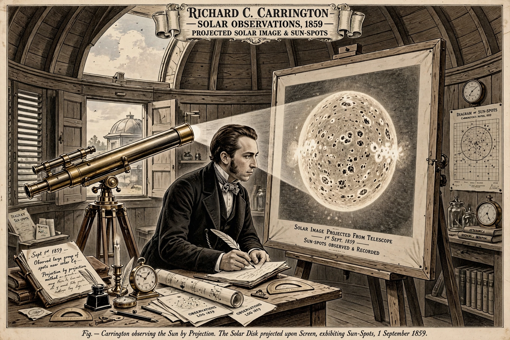

Richard Christopher Carrington (26 May 1826 – 27 November 1875) was an English amateur astronomer whose observations of sunspots in the 1850s established the differential rotation of the Sun and who, in 1859, observed the first recorded solar flare, associated with the great geomagnetic storm known as the Carrington Event.

Carrington, heir to a brewing fortune, pursued astronomy from a private observatory at Redhill, Surrey. From 1853 to 1861 he systematically recorded sunspot positions, publishing a catalogue of 5,290 observations. His data showed that spots near the solar equator complete a rotation faster than those at higher latitudes — evidence that the Sun rotates differentially and is not a solid body.
On 1 September 1859, while projecting an image of the Sun, Carrington witnessed two patches of intense white light erupt and fade over about five minutes. Independently seen by Richard Hodgson, it was the first observation of a solar flare. Hours later a major geomagnetic storm lit aurorae worldwide and disrupted telegraph systems — the largest recorded such storm, whose recurrence today could severely affect power grids and satellites.
Carrington received the Gold Medal of the Royal Astronomical Society in 1859 and was elected a Fellow of the Royal Society in 1860.